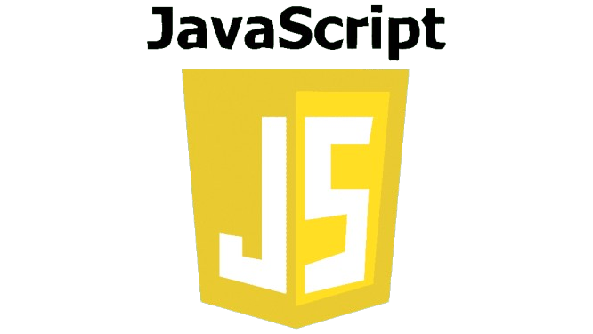
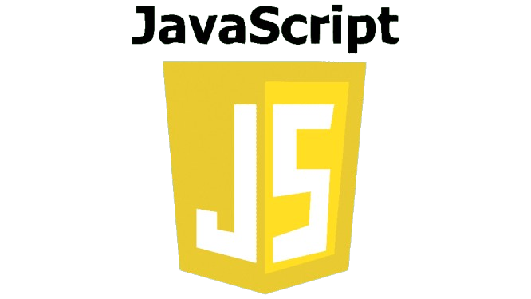

ANKUR
London, UK
janedoe@gmail.com
9587489940
Skills
Adobe Photoshop
Photography
Illustrator
Media
Languages
English
Spanish
German
Front End Developer | rajatsem.com
As a Front End Developer at rajatsem.com, I specialize in crafting responsive and dynamic web pages that prioritize user experience. My responsibilities include working with HTML, CSS, and JavaScript to create seamless, interactive websites. I've collaborated with designers and back-end developers to implement new features, optimized the performance of the website, and ensured cross-browser compatibility. I'm also proficient in React.js, allowing for the development of modern, scalable web applications. My ongoing role involves maintaining and improving website performance, as well as troubleshooting and resolving any front-end issues.
Web Developer | rishabhnegi@gmail;.com
MARCH 2015 - DEC 2020At rishabhnegi.com, I worked as a Web Developer, contributing to both front-end and back-end development projects. My role involved building and maintaining e-commerce platforms, designing intuitive user interfaces, and integrating third-party APIs. I was responsible for optimizing website performance and developing SEO-friendly pages. This position also involved close collaboration with the marketing and design teams to implement design mockups and manage the site's content management system (CMS). Additionally, I gained experience working with PHP, SQL databases, and cloud deployment tools, which allowed me to improve the backend efficiency and scalability.
Graphic Designer | designsomething.com
MARCH 2015 - DEC 2020As a Graphic Designer at designsomething.com, I was responsible for creating compelling visual content for a wide variety of digital platforms. My projects ranged from designing logos, brochures, and social media assets to producing website layouts and UX/UI wireframes. I leveraged my expertise in Adobe Creative Suite, including Photoshop, Illustrator, and InDesign, to produce high-quality visual designs. Additionally, I collaborated with marketing and product teams to develop visual concepts that aligned with brand guidelines and engaged the target audience effectively.
London Business School
MARCH 2015 - DEC 2020At London Business School, I completed a comprehensive program focusing on business management, leadership, and digital strategy. The program enhanced my understanding of key business principles such as financial analysis, strategic planning, and market positioning. Additionally, I gained insights into how technology influences business decisions and the growing role of digital transformation in global industries.
School of Coding
MARCH 2015 - DEC 2020I pursued a technical education at the School of Coding, where I honed my skills in software development and full-stack web technologies. The curriculum covered front-end technologies like   as well as back-end frameworks like Node.js and databases including MongoDB and MySQL. This education provided a strong foundation in coding principles, agile development, and problem-solving methodologies, preparing me for a successful career in web development.
 as well as back-end frameworks like Node.js and databases including MongoDB and MySQL. This education provided a strong foundation in coding principles, agile development, and problem-solving methodologies, preparing me for a successful career in web development.